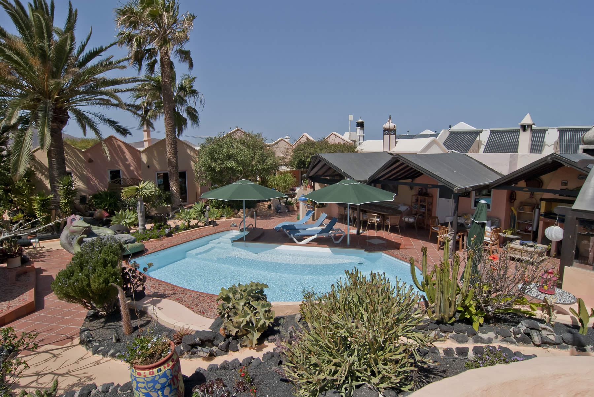
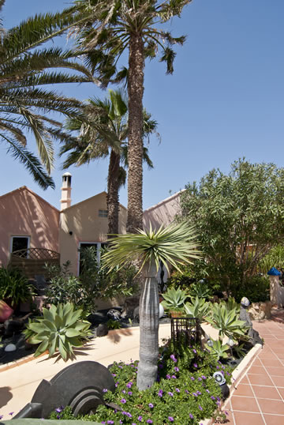
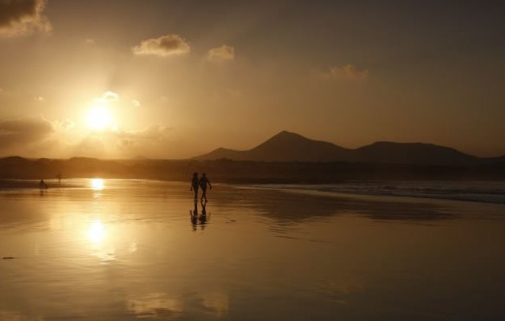
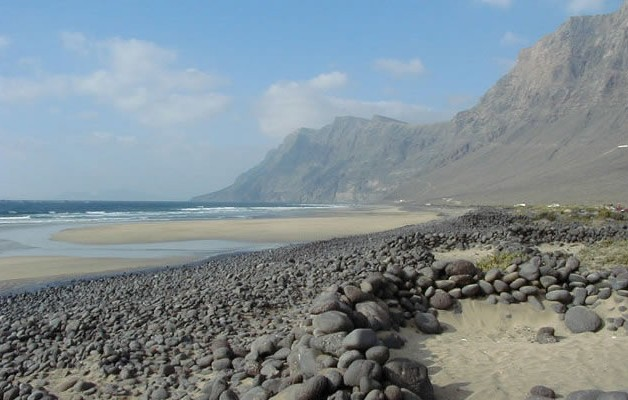
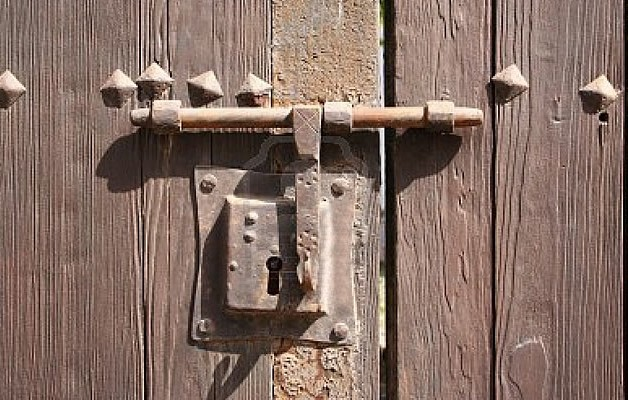
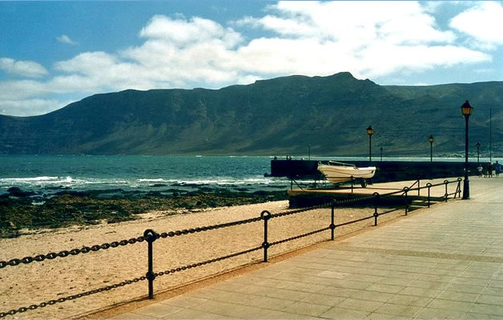

Ca. 50 m² · bis 4 Personen
Appartement 1
Ein separates Schlafzimmer, großzügiger Wohnbereich mit Schlafsofa, Küche und private Terrasse.
Ein stiller Rückzugsort im Nordwesten Lanzarotes
Fünf individuelle Ferienappartements, ein geschützter Garten und ein solarbeheizter Pool – nur wenige Minuten vom endlosen Strand von Famara entfernt.
Willkommen in der Casa Verde
Die Casa Verde liegt im Naturschutzgebiet des Chinijo-Archipels – umgeben von der Weite der Bucht von Famara, dem markanten Risco und der besonderen Ruhe des Inselnordens.
Unsere private Anlage besteht aus fünf liebevoll und individuell eingerichteten Appartements und dem Haupthaus der Gastgeber. Im Mittelpunkt liegen der üppige Garten und der solarbeheizte Pool, der unseren Gästen ganzjährig zur Verfügung steht.
Das passende Appartement finden →

28° 07′ N · 13° 33′ W
Fünf Orte zum Ankommen
Von der ruhigen Rückzugsoase für zwei bis zum großzügigen Appartement für vier: Jede Unterkunft hat ihren eigenen Charakter, eine private Terrasse und alles, was es für entspannte Ferientage braucht.
Ca. 50 m² · bis 4 Personen
Ein separates Schlafzimmer, großzügiger Wohnbereich mit Schlafsofa, Küche und private Terrasse.
Ca. 60 m² · bis 4 Personen
Zwei getrennte Schlafzimmer, ein kleiner eigener Garten und besonders viel Platz für gemeinsame Tage.
Ca. 40 m² · bis 4 Personen
Kompakt und behaglich, mit abgetrennter Schlafecke, Schlafsofa, Küche und eigener Terrasse.
Ca. 70 m² · bis 4 Personen
Das großzügigste Appartement – mit Schlafzimmer, offener Empore für zwei und privater Terrasse.
Ca. 50 m² · 2 Personen
Ein ruhiger Rückzugsort für zwei mit separatem Schlafzimmer, Wohnraum, Küche und Terrasse.
Die auf der bisherigen Website veröffentlichten Preise sind Richtwerte. Endreinigung: eine Tagesmiete. Bitte aktuelle Verfügbarkeit und den verbindlichen Gesamtpreis anfragen.

Der Luxus der Einfachheit
„Morgens das Licht über dem Risco. Nachmittags eine Bahn im Pool. Abends Fisch in Famara.“
Draußen beginnt Lanzarote
Die Casa Verde ist ideal gelegen, um Lanzarotes Norden und die ganze Insel zu entdecken. In wenigen Minuten erreichen Sie Strand, Dorf und die historische Inselhauptstadt Teguise.

Fast fünf Kilometer wilder Sandstrand – geliebt von Wellenreitern, Kitesurfern, Spaziergängern und allen, die Weite suchen.

Die ehemalige Inselhauptstadt bezaubert mit historischer Architektur, kleinen Läden und dem bekannten Sonntagsmarkt.

Ein entspanntes Küstendorf mit Fischrestaurants, Tapasbars, kleinem Hafen und unverwechselbarem Charme.
Impressionen
Vulkanische Landschaft, tiefes Blau und die privaten Winkel der Casa Verde. Wählen Sie ein Bild für die große Ansicht.
Ihre Zeit auf Lanzarote
Senden Sie uns Ihre Reisedaten. Wir antworten persönlich mit Verfügbarkeit, passender Appartement-Empfehlung und verbindlichem Gesamtpreis.